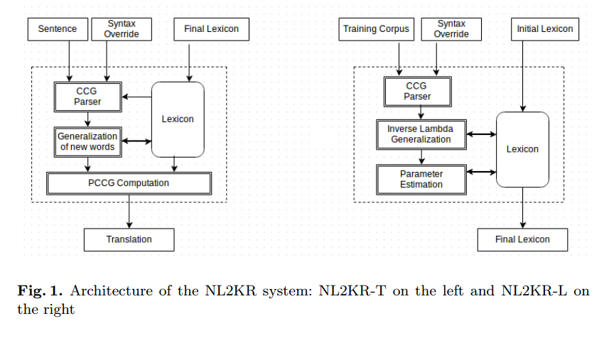
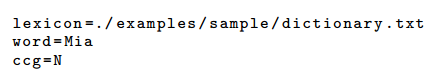
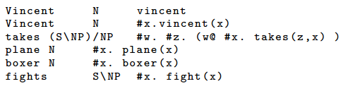
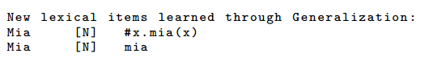
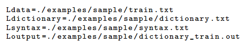
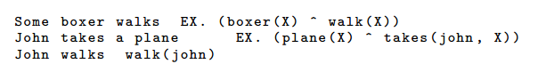
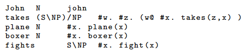
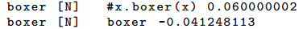

# 论文阅读 10.30
# Using Inverse λ and Generalization to Translate English to Formal Languages
# The NL2KR system
Chitta Baral、Juraj Dzifcak、Kanchan Kumbhare and Nguyen H. Vo。
# Abstract
In this paper they describe the NL2KR system that translates natural language sentences to a targeted knowledge representation formalism.
该论文提出了一种系统，能讲自然语言句子翻译为有针对性的知识表示形式。
The system starts with an initial lexicon and learns meaning of new words from a given set of examples of sentences and their translations.
这个系统从初始词典开始，从一组给定的句子示例及其翻译中学习新单词的含义。
Keywords: Natural Language Understanding, Lambda Calculus, Knowledge Representation
# Introduction and Motivation
自然语言的理解涉及到将自然语言文本翻译成适当的知识表示语言，以便于推理引擎可以使用知识翻译进行推理并给出相应。为了将自然语言翻译成正式的知识陈述，作者建议使用 Montague 的组合方法 [1](https://www.jstor.org/stable/24435424)，其中单词的翻译通过 lambda 演算公式给出，句子和短语的含义是由组成词的意义组合而成。
该方法的主要挑战是为每个单词提出适当的 lambda 演算表达式：
- 单词数量可能很大
- 单词的 lambda 表达式对人来说过于复杂
- lambda 对单词的表达是特定于目标语言的
为了解决上述挑战，可以使用逆 lambda 算法 [2]，该算法计算单词 / 短语 G 的含义，当单词 / 短语 H 和短语 GH（HG）的含义已知时。
NL2KR 系统使用包含一些单词及其含义的初始词典 和 一组包含自然语言句子及其翻译的训练语料库 来 学习单词的新含义。然后系统使用新学习的词典来翻译新句子。
本文中，作者将概述 NL2KR 系统及其使用示例。
λ 演算
# [2]Using Inverse λ and Generalization to Translate English to Formal Languages
我们提出了一个将自然语言句子翻译为形式或知识表示语言的公式的系统。我们的系统使用两个逆 λ 演算运算符，使用它们可以将某些单词、短语和句子的语义表示作为输入，并从中导出其他单词和短语的语义表示。我们的逆 λ 运算符适用于许多形式语言，包括一阶逻辑、数据库查询语言和回答集编程（ASP）。我们的系统使用句法组合分类解析器来解析自然语言句子，并按照解析的指导构建句子的语义。两者使用相同的解析器。除了逆 λ 演算运算符之外，我们的系统还使用泛化概念从同一类别的其他单词的语义表示中学习单词的语义表示。与此同时，我们使用现有的统计学习方法来分配权重来处理单词的多重含义。我们的系统在机器人命令和控制以及数据库查询的自然语言界面的标准语料库上产生了改进的结果。
G = λx.H(in(river, Texas) : x@Texas@river) F = λv1, v2.in(v2, v1)
G@F = H(in(river, Texas) : F@Texas@river)= H(in(river, Texas) : λv1, v2.in(v2, v1) @Texas@river)
=H(in(river, Texas) : λv1, v2.in(v2, v1) @Texas@river)= H(in(river, Texas) : in(river, Texas)) = H(in(river, Texas))
# Overview

上图为 NL2KR 系统的架构，左边是用于翻译的 NL2KR-T，右边是用于学习的 NL2KR-L。
用于学习的部分，采用初始字典（lambda 演算表达式）、一组训练句子及其目标形式表示作为输入。然后使用组合分类语法（CCG）解析器来构建解析树。随后，系统使用 逆 lambda 和 泛化算法（Generalization）来学习新遇到的，不在初始字典中的新单词的含义，并将它们添加到词典中。然后使用参数学习方法来估计每个词典条目（单词、其句法类别和含义）的权重，使得训练集中的句子被翻译成给定的形式的联合概率最大。NL2KR-L 的结果是最终的词典，其中包含更大的单词集、它们的含义和权重。
训练组件完成其工作后，翻译子部分 (NL2KR-T) 使用此更新的词典并使用 CCG 解析器翻译句子。由于单词可以具有多种含义及其相关的 λ 演算表达式，因此分配给词典中每个词汇条目的权重有助于确定单词在句子上下文中更可能的含义。
# Conclusion and Future Work
在这项工作中，我们提出了 NL2KR 系统，该系统用于将自然语言翻译为形式表示。 NL2KR 系统的输入是训练句子及其形式化表示；以及一些已知单词含义的初始词典。 NL2KR 系统将尝试从训练数据中学习其他单词的含义。我们提供了六个脚本来执行 NL2KR 的多个模块，并通过示例展示了如何使用它们。
未来，我们计划使 NL2KR 更具可扩展性，并向 NL2KR 系统添加更多功能，例如（1）自动构建初始词典和（2）使用更多知识（例如词义）来选择单词的正确含义。
# 总结
NL2KR 是一个半自动语义解析平台，它有两个相互依赖的子部分：（1）用于学习的 NL2KR-L；（2）用于翻译的 NL2KR-T。
NL2KR-L 输入的初始词典包括一些单词及其在 lambda-calculus 表达式中的含义、一组训练句子及其目标形式表示。然后，它使用组合分类语法（CCG）解析器构建解析树。接下来，系统的学习子部分使用逆 -λ 算法和泛化算法来学习新遇到的词的含义，并将其添加到词库中。然后使用参数学习法来估计每个词库条目（词、其句法类别和含义）的权重，从而使训练集中的句子被翻译成其给定形式表示的联合概率最大化。
NL2KR-L 的结果就是最终词库，其中包含所有词、词义和权重。训练组件完成工作后，翻译组件（NL2KR-T）将使用更新后的词典，并使用 CCG 分析器翻译句子。由于单词可以有多种含义及其相关的 λ 微积分表达式，分配给词典中每个词条的权重有助于确定单词在句子上下文中更可能的含义。
# Why
将自然语言表示成知识表示语言的方法有许多，作者是在 Montague 的基础上开展研究，自然语言中的单词处理是通过 lambda 演算公式给出的，短语和句子的含义是通过组合单词语义获得。然而这样操作的挑战在于需要对每一个单词提出适当的 lambda 演算表达式：首先，单词的数量繁多；其次，某些单词的 lambda 表达式过于复杂，不容易直接想出；最后，lambda 表达式是特定于目标语言的。
# What
为了解决上述问题，作者采用 逆 lambda 算法，已知 单词 / 短语 H 和短语 GH，就可以求出，单词 / 短语的含义 G。
NL2KR 系统有两个子系统，使用包含一些单词及其含义的初始词典和一组包含自然语言句子及其翻译的训练语料库来学习单词的新含义。
# How NL2KR 系统
NL2KR-L 是学习部分，输入是初始词典、训练语料库、语法。首先将 训练语料库按照语法通过 CCG 组合分类语法解析器构造解析树；随后，通过 逆 lambda 算法和 泛化方法 来学习不存在于初始词典中的新单词的含义，并将其添加到词典中；然后，使用参数学习（parameter learning）的方法估计词典中条目的权重，使得训练集中的句子被翻译成给定形式的联合概率最大。最终输出更大的词典。
NL2KR-T 是翻译部分，其使用训练产生的词典作为输入，通过使用 CCG 解析器解析句子。
# 实验过程
# lambda 算法
例子：
function =# y .# x. loves (x , y)
argument =# x. x@mia
Result = #x . loves (x ,# x0 . x0 @ mia )
# 逆 lambda 算法
f = g @ h 或者 f = h@g，但有时我们只有 f 和 g，怎么得到 h
f = l @ r
parent =# x. loves (x , mia )
left_child = mia
Right child = null
因为 找不到一个 r 使得 l@r = f
但如果：
parent =# x. loves (x , mia )
right_child = mia
Left child = # x1 .# x. loves (x , x1 )
因为 # x1 .# x. loves (x , x1 ) @ mia = # x. loves (x , mia )
对第一个例子，把 mia 换一种形式表示
parent =# x. loves (x , mia )
left_child =# x. x @ mia
Right child = # x1 .# x. loves (x , x1 )
因为 # x. x @ mia @ # x1 .# x. loves (x , x1 ) = # x1 .# x. loves (x , x1 ) @ mia = # x. loves (x , mia )
# 逆 lambda 算法的细节
逆 lambda 算法包括两个逆 lambda 操作， 和
假设有
\begin{align*}\label{2} &1.IF \; G \;is\;\lambda v.v@J,set\;F=Inverse_L(H,J)\\ &2.IF\;J\;is\;a\;sub\;term\;of\;H\;and\;G\;is\;\lambda v.H(J:v)\;then\;F=J\\ &3.IF\;G\;is\;not\;\lambda v.v@J,J\;is\;a\;sub\;term\;of\;H\;and\;G\;is\;\lambda w.H(J(J_1,...J_m):w@J_p,...,J_q)with\\ &\;1≤p,q,s ≤ m. then\;F = λv1, ..., vs.J(J1, ..., Jm : vp, ..., vq). \end{align*}例子：
假设有 和
由于 J 不是条件一中的类型，因为 不是一个公式，所以条件一不符合
并且也不符合条件二。
因此，我们尝试寻找一个合适的 J 满足条件三。假设 那么第三个条件应该满足
即
# 泛化方法
当缺少的词过多时，便不能用 逆 lambda 算法 计算词的含义，因而我们可以使用 泛化算法生成新单词的含义
例如，已知 eats 的语法类别为 (S\NP)/NP、lambda 表达式为 λy,λx,eats(x, y) ，而我们想要知道 语法类别为 plays 的 lambda 表达式，我们可以通过泛化得到其表达式应该为 λy,λx,play(x, y)
例如：

dictionary 中含有：

mia 被泛化成：

# CCG 解析
组合规则的方向： CCG 使用斜线（/）和反斜线（\）来表示组合规则的方向。斜线表示右向组合，反斜线表示左向组合。例如，X/Y 表示 X 组合到 Y 的右侧，X\Y 表示 X 组合到 Y 的左侧。 本论文的CCG基于 ASPccgTK
函数应用规则： CCG 使用函数应用规则来表示动词与宾语的组合。例如，如果动词是 X/Y，它需要一个 X 类型的宾语，这样它们可以组合成一个完整的动词短语。
合并规则： 合并规则用于组合两个相同类型的组合范畴，以构建更大的短语或子句。例如，如果你有 X\Y 和 Y，它们可以合并成 X，表示它们共同组成一个更大的短语。
限定词规则： 限定词如冠词（“the”、“a”）通常需要与名词短语组合。这些规则用于确保正确的限定词与名词的组合。
副词修饰规则： 副词通常修饰动词或形容词。相关的规则确保副词与适当的词汇项组合。
并列规则： 用于描述两个或多个并列词汇项之间的组合，以构建并列结构。
其他特殊规则： CCG 还可以包括其他特殊情况下的组合规则，以处理复杂的语法结构。
# NL2KR-L
运行该模块需要在 RunConfiguration 文件中设置初始词典文件路径、语法类别的覆盖文件（可选）、训练数据文件和输出词典文件路径（可选） 。

词典中是完整的知识表示内容，syntax 中包含的是 单词 及其 语法类别。训练文件中包含的是训练的句子。
train：

初始词典为：
Vincent N vincent
Vincent N #x.vincent(x)
takes (S\NP)/NP #w. #z. (w@ #x. takes(z,x) )
plane N #x. plane(x)
boxer N #x. boxer(x)
fights S\NP #x. fight(x)

在学习 Some boxer walks 的时候，根据 syntax 中提供的语法信息，比照着 fights 进行泛化学习：
takes (S\NP)/NP
Every (S/(S\NP))/NP
Some (S/(S\NP))/NP
walks S\NP
fights S\NP
loves (S\NP)/NP
得到 walks S\NP #x. walks (x)
EX. (boxer(X) ^ walk(X)) = some boxer @ walks
walks S\NP #x. walks(x)
some boxer #x1.EX.boxer(X) ^ x1@X
#x1.EX.boxer(X) ^ x1 @X @ #x. walks(x) = EX.boxer(X) ^ #x.walks(x)@X = EX.boxer(X) ^ walks(X)
利用 boxer 的含义 #x.boxer (x)，我们可以得到 some 的含义
some #x2.#x1.EX.x2@X^x1@X
some@boxer = #x2.#x1.EX.x2@X^x1@X@#x.boxer(x)
= #x1.EX.#x.boxer(x)@X ^ x1@X
= EX.#x.boxer(x)@X^X
= EX.boxer(X)^X
在学习阶段结束时，运行参数估计来为每个单词的含义分配权重。因为同一个词可以有多个知识表示形式，例如 boxer 在通过泛化学习后，拥有 boxer 和 #x.boxer (x) 两个含义，但是含义 boxer 对于整个句子的翻译没有任何贡献，所以其权重很小，为负数。

概率学习的方法：
# NL2KR-T
John catches a bus
N (S\NP)/NP NP/N N
John: john
catches: #w.#z.w@#x.catches(z,x)
a: #x7.#x5.EX.x7@X ^ x5@X
bus: #x.bus(x)
a bus
#x7.#x5.EX.x7@X^x5@X @ #x.bus(x)
#x5.EX.#x.bus(x)@X^x5@X
catches a bus:
#w.#z.w@#x.catches(z,x) @ #x5.EX.#x.bus(x)@X^x5@X
#z.#x5.EX.#x.bus(x)@X^x5@X@#x.catches(z,x)
john catches a bus:
(#z.#x5.EX.#x.bus(x)@X^x5@X@#x.catches(z,x))@john
#x5.EX.#x.bus(x)@X^x5@X@#x.catches(john,x)
EX.#x.bus(x)@X^#x.catches(john,x)@X
EX.bus(X)^catches(john,X)
# 总结和展望
在这篇论文中，作者实现了一个 NL2KR 系统用于将自然语言翻译为知识表示，并成功实现了相关功能。
未来作者打算向 NL2KR 系统添加更多功能，如，自动构建初始词典，使用更多的知识来选择单词的正确含义。
关于 Log-linear models and conditional random fields